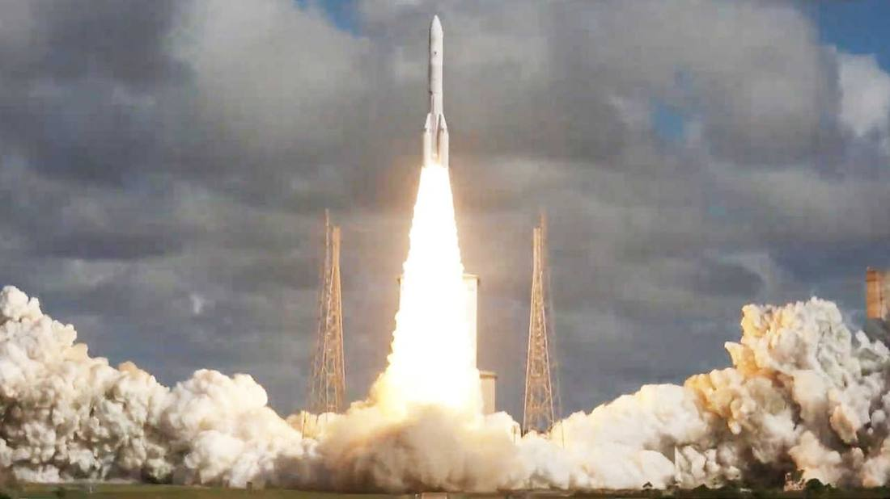

Ariane 6 Lifts Off With 36 Amazon Leo Satellites After One-Day Delay
Arianespace's Ariane 6 launched 36 Amazon Leo satellites from Kourou, French Guiana, on November 24, 2026 at 11:14 UTC, a day after a ground-support issue halted the countdown. It was the tenth Ariane 6 flight and the fourth carrying Leo satellites in 2026. The rocket was in its first coast phase at 11:44 UTC, with final separation expected around 13:18 UTC.

- 01THE SCRUB — November 23, 2026: Arianespace halts the VA271 countdown over a technical event in the launcher's ground-support systems, before the mobile gantry is removed. The rocket and the 36 Leo satellites remain safe; the next opportunity is no earlier than November 24.
- 02THE WINDOW — November 24, 2026, 10:45 to 11:14 UTC: the rescheduled window opens. Ariane 6 lifts off at 11:14 UTC, at the end of the window, in the Ariane 64 configuration with four P160C solid rocket boosters.
- 03LIFTOFF — November 24, 2026, 11:44 UTC: Arianespace reports the rocket is in its first coast phase. Final satellite separation is expected about two hours and four minutes after liftoff, around 13:18 UTC.
WHAT HAPPENEDWhat Happened
Arianespace's Ariane 6 rocket lifted off from Europe's Spaceport in Kourou, French Guiana, on November 24, 2026 at 11:14 UTC, carrying 36 Amazon Leo broadband satellites. Liftoff came at the end of the 10:45 to 11:14 UTC window, after the mission was delayed a day by a technical event in the launcher's ground-support systems. It was the tenth flight of Ariane 6 overall, the fourth Ariane 6 flight carrying Amazon Leo satellites in 2026, and the fourth flight of the four-booster Ariane 64 configuration.
The November 23 countdown was halted before the mobile gantry was removed, and Arianespace said the rocket and the satellites remained safe while engineers completed checks. The rescheduled window opened at 10:45 UTC on November 24. In an update at 11:44 UTC, Arianespace said the rocket was in the midst of its first coast phase. Final satellite separation is expected about two hours and four minutes after liftoff, around 13:18 UTC.
A successful mission brings Arianespace's contribution to the Amazon Leo constellation to 136 satellites, and the constellation total to 432 satellites in orbit, against a first-generation plan of 3,232 spacecraft. Amazon announced in October that it had built its 1,000th Leo satellite. The launch comes nine days after United Launch Alliance's Vulcan rocket failed on November 15, losing 40 Leo satellites, and after Blue Origin's fourth New Glenn rocket was destroyed in a pad explosion during a static-fire test.
WHY IT MATTERSNine days after losing 40 satellites, Amazon's constellation is moving again.
The Vulcan failure on November 15 was the first full mission failure for ULA since its founding in 2006, and it took the largest single Leo batch ever launched. With Vulcan grounded and New Glenn's return to flight pushed into early 2027, Ariane 6 is currently the only one of Amazon's three heavy-lift providers actually flying. LE-04 is therefore not a routine deployment flight: it is the launch that keeps Amazon's year-end service target alive.
The numbers still favor patience over celebration. Even after LE-04, the constellation sits at 432 satellites against a 3,232-spacecraft first-generation plan, and Amazon's Federal Communications Commission obligation is to deploy the full constellation by July 30, 2029. Amazon filed in January for a 24-month extension of the earlier halfway deadline. The launch cadence, not any single flight, is what decides whether that schedule holds.
THE WATCHPOINTLiftoff is not deployment — the next confirmation is separation.
The rocket was still in its first coast phase at Arianespace's 11:44 UTC update, and the 36 satellites separate only around 13:18 UTC. A clean liftoff says the ground issue is fixed and the vehicle is performing; it does not yet say the payload reached its planned orbit. Watch for Arianespace's confirmation of deployment and for Amazon's confirmation that the satellites are healthy and raising to their 630-kilometre operating orbits.
The wider watch is the manifest. Amazon raised its Arianespace order from 18 to 24 launches in September 2026, and Arianespace is now the provider carrying the constellation while Vulcan and New Glenn recover. Every further slip on any of the three rockets pushes the late-2026 commercial service opening further out.
THE SHIFTWhat Changed
SIGNAL JUDGMENT — ANALYSISThe only rocket flying for Amazon right now just did its job — the first half of it.
Tokenta Signal's judgment: LE-04 matters less as a single launch than as proof that Amazon still has a working ride to orbit while Vulcan is grounded and New Glenn is rebuilding its pad. Ariane 6 has now flown four Leo batches this year without a failure, which is exactly the reliability Amazon is buying with its expanded 24-launch order. The honest caveat is timing: liftoff is confirmed, deployment is not, and the constellation is still at 432 of 3,232 satellites. Watch the separation confirmation, then the cadence — Amazon needs roughly a launch a month from someone, and right now only Arianespace is delivering.
WHAT REMAINS UNCERTAINWhat Remains Uncertain
EVIDENCEEvidence
Spaceflight Now's live coverage of the VA271/LE-04 mission, updated November 24, 2026 at 11:44 UTC: Arianespace's Ariane 6 launched 36 Amazon Leo satellites from Kourou at 11:14 UTC, at the end of the launch window, and the rocket was in its first coast phase, with final satellite separation expected about two hours and four minutes after liftoff.
PRIMARY SOURCESPrimary Sources
- Spaceflight Now: Live coverage: Arianespace launches 36 Amazon Leo sats amid rocket crunch
https://spaceflightnow.com/2026/11/23/live-coverage-arianespaces-launches-amazon-leo-sats-amid-rocket-crunch/ - Arianespace: Ariane 6 launches Amazon Leo 4 (LE-04)
https://www.youtube.com/watch?v=45PPBgvLYUI - TeslaNorth: Amazon Leo Launch Rescheduled After Ariane 6 Ground Issue
https://teslanorth.com/2026/11/23/amazon-leo-ariane-6-launch-delay/ - The Space Road: Ariane 6 Amazon Leo launch delayed to no earlier than 24 November
https://thespaceroad.com/articles/when-will-amazon-leo-and-vulcan-fly-next/